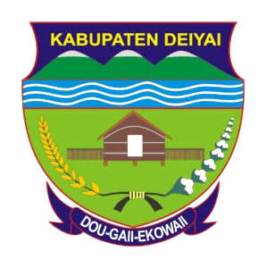

ASRAMA DEIYAI
Asrama Kab. Deiyai · Kota Studi Jayapura
Sistem Informasi Monitoring dan
Manajemen
Asrama Deiyai
Rumah kedua bagi mahasiswa
Rumah kedua bagi mahasiswa
Kabupaten Deiyai di Kota Studi Jayapura
Sistem Monitoring dan Manajemen membantu Asrama Mahasiswa Kabupaten Deiyai mengelola penghuni, kamar, presensi, izin keluar‑masuk, hingga laporan bulanan dalam satu portal — supaya mahasiswa asal Deiyai yang menempuh studi di Jayapura tetap terpantau, tertib, dan terurus dengan baik.
+
Penghuni Aktif
Total Kamar
Kamar Tersedia
+
Alumni Asrama